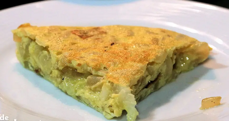

Tortilla de cebolla
receta de tortilla de cebolla

Ingredientes
- 1 cebolla
- 4 huevos
- Aceite de oliva
- Sal
Elaboración (pasos)
- calentar aceite en una sartén
- añadir la cebolla cortada y la sal
- freir al gusto
- batir los huevos y añadirlos
- freir la tortilla por ambos lados
- servir en plato
Volver